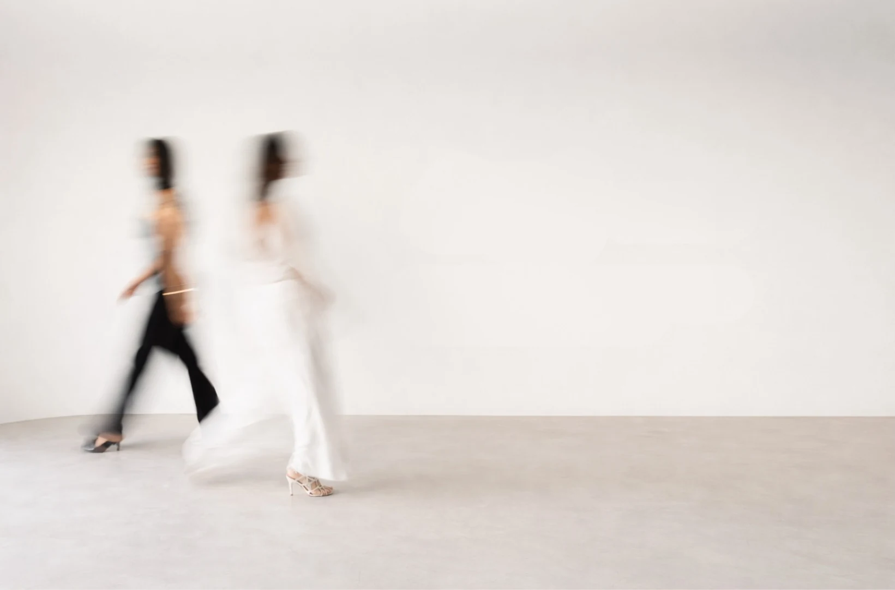

Valorizamos história
e originalidade.
Arquitetura e interiores · Brasília
03 · do desenho à obra
Projetos começam
na conversa.
Arquitetura baseada na escuta, no entendimento do que faz sentido para quem vai viver o espaço.
próxima etapa
Projetos: a pilha de cards
que forma studio óri.
Aqui entra a seção seguinte. O hero destrava o scroll neste ponto.